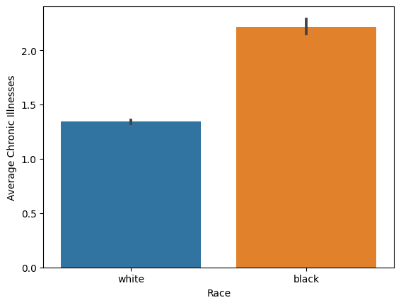

import pandas as pd
from matplotlib import pyplot as plt
import numpy as np
import seaborn as snsDH 140 Final Project
Date : 03/20/2023
Introduction
https://www.science.org/doi/10.1126/science.aax2342
The article “Dissecting Racial Bias in an Algorithm Used to Manage the Health of Populations” relased by Science examines how an algorithm used in healthcare can perpetuate racial bias. The article focuses on an algorithm that is used to identify patients who may benefit from additional healthcare services or lower costs. The author dives deep into one specific algorithm used in the industry, which he found in his study to exhibit racial bias. It presented racial bias by assigning a lower risk score to White patients over Black patients, even though they had similar similar scores throughout the different variables the algorithm would use to determine health risk score.
A description to the dataset and how it was obtained can be found under this link: https://gitlab.com/labsysmed/dissecting-bias
Some of the reasons as to why I chose this dataset to analyze include having a deeper understanding of algorithms that are racially biased, and determining if this algorithm in specific is racially biased. As a first generation student and person of color, taking a closer look at the data and how this algorithm works will help me understand how algorithms can be not only racially biased, but could lead inaccurate decisions and outcomes that may lead to people of color have inmense disavantages in several aspects of life, not only the health care system.
Therefore, with this data set, I will take a high level overview of analysis to explore how risk scores are being assigned to patients. Specifically, I will try to answer the question what factors could make this algorithm racially bias? How is it affecting patients of color?
Methods
Information about the data
health_risk = pd.read_csv('data_new.csv')
health_risk
# we can see that there are variables that have NaN values, such as bps_mean_t or idl_mean_t
# we will remove these in our analysis | risk_score_t | program_enrolled_t | cost_t | cost_avoidable_t | bps_mean_t | ghba1c_mean_t | hct_mean_t | cre_mean_t | ldl_mean_t | race | ... | trig_min-high_tm1 | trig_min-normal_tm1 | trig_mean-low_tm1 | trig_mean-high_tm1 | trig_mean-normal_tm1 | trig_max-low_tm1 | trig_max-high_tm1 | trig_max-normal_tm1 | gagne_sum_tm1 | gagne_sum_t | |
|---|---|---|---|---|---|---|---|---|---|---|---|---|---|---|---|---|---|---|---|---|---|
| 0 | 1.987430 | 0 | 1200.0 | 0.0 | NaN | 5.4 | NaN | 1.110000 | 194.0 | white | ... | 0 | 0 | 0 | 0 | 0 | 0 | 0 | 0 | 0 | 0 |
| 1 | 7.677934 | 0 | 2600.0 | 0.0 | 119.0 | 5.5 | 40.4 | 0.860000 | 93.0 | white | ... | 0 | 1 | 0 | 0 | 1 | 0 | 0 | 1 | 4 | 3 |
| 2 | 0.407678 | 0 | 500.0 | 0.0 | NaN | NaN | NaN | NaN | NaN | white | ... | 0 | 0 | 0 | 0 | 0 | 0 | 0 | 0 | 0 | 0 |
| 3 | 0.798369 | 0 | 1300.0 | 0.0 | 117.0 | NaN | NaN | NaN | NaN | white | ... | 0 | 0 | 0 | 0 | 0 | 0 | 0 | 0 | 0 | 0 |
| 4 | 17.513165 | 0 | 1100.0 | 0.0 | 116.0 | NaN | 34.1 | 1.303333 | 53.0 | white | ... | 0 | 0 | 0 | 0 | 0 | 0 | 0 | 0 | 1 | 1 |
| ... | ... | ... | ... | ... | ... | ... | ... | ... | ... | ... | ... | ... | ... | ... | ... | ... | ... | ... | ... | ... | ... |
| 48779 | 0.611517 | 0 | 800.0 | 0.0 | NaN | NaN | NaN | 1.090000 | 148.0 | white | ... | 0 | 0 | 0 | 0 | 0 | 0 | 0 | 0 | 0 | 0 |
| 48780 | 2.615933 | 0 | 2200.0 | 0.0 | 112.0 | NaN | 41.4 | 0.810000 | 172.0 | white | ... | 0 | 1 | 0 | 0 | 1 | 0 | 0 | 1 | 1 | 1 |
| 48781 | 1.358926 | 0 | 800.0 | 0.0 | 105.0 | NaN | NaN | NaN | NaN | white | ... | 0 | 1 | 0 | 0 | 1 | 0 | 0 | 1 | 1 | 0 |
| 48782 | 10.990318 | 0 | 1300.0 | 0.0 | 132.0 | NaN | NaN | NaN | NaN | white | ... | 0 | 0 | 0 | 0 | 0 | 0 | 0 | 0 | 3 | 3 |
| 48783 | 1.681671 | 0 | 4400.0 | 0.0 | 115.0 | 5.6 | 36.6 | 0.940000 | NaN | white | ... | 0 | 0 | 0 | 0 | 0 | 0 | 0 | 0 | 0 | 0 |
48784 rows × 160 columns
health_risk.shape # 48,000 entries with 160 different variables(48784, 160)health_risk.describe() # summary statistics | risk_score_t | program_enrolled_t | cost_t | cost_avoidable_t | bps_mean_t | ghba1c_mean_t | hct_mean_t | cre_mean_t | ldl_mean_t | dem_female | ... | trig_min-high_tm1 | trig_min-normal_tm1 | trig_mean-low_tm1 | trig_mean-high_tm1 | trig_mean-normal_tm1 | trig_max-low_tm1 | trig_max-high_tm1 | trig_max-normal_tm1 | gagne_sum_tm1 | gagne_sum_t | |
|---|---|---|---|---|---|---|---|---|---|---|---|---|---|---|---|---|---|---|---|---|---|
| count | 48784.000000 | 48784.000000 | 48784.000000 | 48784.000000 | 38116.000000 | 13252.000000 | 21268.000000 | 23971.000000 | 19456.000000 | 48784.000000 | ... | 48784.000000 | 48784.000000 | 48784.000000 | 48784.000000 | 48784.000000 | 48784.000000 | 48784.000000 | 48784.000000 | 48784.000000 | 48784.000000 |
| mean | 4.393692 | 0.009265 | 7659.716300 | 2434.722450 | 127.333272 | 5.959331 | 40.428418 | 0.957342 | 103.820203 | 0.630596 | ... | 0.090091 | 0.261807 | 0.028882 | 0.097245 | 0.256088 | 0.027939 | 0.107228 | 0.251455 | 1.443137 | 1.354481 |
| std | 5.519582 | 0.095811 | 17989.921192 | 12058.341779 | 16.337397 | 1.000817 | 4.231178 | 0.565138 | 32.944924 | 0.482648 | ... | 0.286315 | 0.439623 | 0.167478 | 0.296294 | 0.436476 | 0.164801 | 0.309406 | 0.433854 | 2.048888 | 1.942488 |
| min | 0.000000 | 0.000000 | 0.000000 | 0.000000 | 0.000000 | 4.000000 | 20.811111 | 0.236667 | 3.000000 | 0.000000 | ... | 0.000000 | 0.000000 | 0.000000 | 0.000000 | 0.000000 | 0.000000 | 0.000000 | 0.000000 | 0.000000 | 0.000000 |
| 25% | 1.443859 | 0.000000 | 1200.000000 | 0.000000 | 118.000000 | 5.400000 | 38.100000 | 0.750000 | 80.000000 | 0.000000 | ... | 0.000000 | 0.000000 | 0.000000 | 0.000000 | 0.000000 | 0.000000 | 0.000000 | 0.000000 | 0.000000 | 0.000000 |
| 50% | 2.887719 | 0.000000 | 2800.000000 | 0.000000 | 127.000000 | 5.700000 | 40.700000 | 0.875000 | 101.000000 | 1.000000 | ... | 0.000000 | 0.000000 | 0.000000 | 0.000000 | 0.000000 | 0.000000 | 0.000000 | 0.000000 | 1.000000 | 1.000000 |
| 75% | 5.350773 | 0.000000 | 6600.000000 | 100.000000 | 136.000000 | 6.100000 | 43.121970 | 1.035000 | 124.000000 | 1.000000 | ... | 0.000000 | 1.000000 | 0.000000 | 0.000000 | 1.000000 | 0.000000 | 0.000000 | 1.000000 | 2.000000 | 2.000000 |
| max | 100.000000 | 1.000000 | 550500.000000 | 642700.000000 | 1323.000000 | 14.733333 | 70.280000 | 22.206667 | 387.000000 | 1.000000 | ... | 1.000000 | 1.000000 | 1.000000 | 1.000000 | 1.000000 | 1.000000 | 1.000000 | 1.000000 | 18.000000 | 17.000000 |
8 rows × 159 columns
# Take a close look at the average chronic illnesses per race
sns.barplot(x = 'race', y = 'gagne_sum_tm1', data = health_risk)
plt.xlabel("Race")
plt.ylabel("Average Chronic Illnesses")
plt.show()
# Even though the proportion of Black patients in this data set is less than White patients, we can see that there is a
# higher proportion of White patients having higher costs than Black patients
sns.histplot(x = 'cost_t', data = health_risk, bins = 10, hue = 'race', binwidth = 2500)
plt.xlim(0, 40000)
plt.show()# Taking a closer look at different variables and seeing their correlations
cols = ['risk_score_t', 'gagne_sum_t','cost_t']
new_health = health_risk[cols]
corr_matrix = new_health.corr()
sns.heatmap(corr_matrix, annot=True, cmap='coolwarm')
plt.show()
# Taking a closer look at different variables and seeing their correlations
cols = ['risk_score_t', 'dem_female','alcohol_elixhauser_tm1']
new_health = health_risk[cols]
corr_matrix = new_health.corr()
sns.heatmap(corr_matrix, annot=True, cmap='coolwarm')
plt.show()Analysis
In my analysis, I will perform a linear regression to determine the variables that not only contribute most to risk score
import sklearn
from sklearn import preprocessing
from sklearn import linear_model
from sklearn import model_selection# droppiing NaN values from our data
health_risk = health_risk.dropna()
health_risk.shape(6911, 160)# Changing the race variable into a binary integer rather than a string to apply to our model
le = preprocessing.LabelEncoder()
health_risk['race'] = le.fit_transform(health_risk['race'])/tmp/ipykernel_529/2640398921.py:3: SettingWithCopyWarning:
A value is trying to be set on a copy of a slice from a DataFrame.
Try using .loc[row_indexer,col_indexer] = value instead
See the caveats in the documentation: https://pandas.pydata.org/pandas-docs/stable/user_guide/indexing.html#returning-a-view-versus-a-copy
health_risk['race'] = le.fit_transform(health_risk['race'])# creating independent and dependent variables
y = health_risk['risk_score_t']
X = health_risk.drop('risk_score_t', axis = 1)# splitting data into training and testing sets
X_train, X_test, y_train, y_test = model_selection.train_test_split(X, y, test_size = 0.2, random_state = 2021) # hold out 20% of data# fit data to linear regression model
LR = linear_model.LinearRegression()
LR.fit(X_train, y_train)
print(LR.score(X_train, y_train), LR.score(X_test, y_test))0.6561374047918115 0.558242044005459# will use function later to apply different combinations of variables to determine which variables give the best
# score to predict risk score
def check_column_score(cols):
print("training with columns " + str(cols))
LR = LinearRegression()
return cross_val_score(LR, X_train[cols], y_train, cv = 5).mean() Once I determine the variables that contribute most to the risk score, I would like to make 2 different visualizations with 2 different variables in relation to the risk score. Also, I would like to plot the coefficients that contribute most to the model. Finally, for my last plot, I will show the different cross validation scores I got with the different variable combinations to show which score got the best validation score.